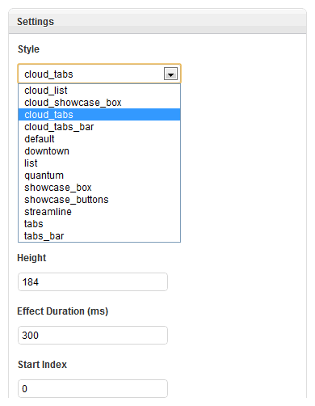

Bonus styles are extra styles for widgets that are not included in the default release of Widgetkit. To install our Widgetkit bonus styles is pretty easy. Download the latest bonus styles from our member area and extract the content to:
Joomla
Wordpress
Now you can select the bonus styles when you create new widgets.
